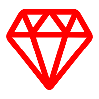
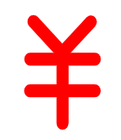

用户
{{sta.userCount}}

选题
{{sta.topicCount}}
任务
{{sta.taskCount}}
文件
{{sta.fileCount}}
作品
{{sta.productCount}}

访问量
{{sta.accessCount}}

请作者喝杯咖啡


虽然已经用过不少优秀的后台模板，但是一直都感觉不尽完美，于是在经过激烈的思想斗争后，我决定牺牲五一假期， 亲自做一个尝试一下， 一来正好以后自己的项目中使用，二来也算是为开源界做一点自己的贡献吧
开源不易，求鼓励，求star
模板：提供大量常见示例，以及各种表单的书写方式，助你快速CRUD
菜单：支持一、二、三级菜单，并开放一系列接口方便的使用js操作菜单
折叠：折叠或收缩菜单，并且监听窗口大小变化，在拉伸窗口时自动折叠或收缩菜单，自动响应式
搜索：智能索引，快捷搜索打开某个菜单
切换：集成swiper动画，滑动、淡入、方块、3D流、3D翻转，五种高大上切换动画，任你选择！
主题：目前保留八种主题：蓝色、绿色、白色、灰色、灰色-展开、pro钛合金、沉淀式黑蓝、简约式灰蓝（切换主题时，可自动保存你的喜好，下次打开时仍然有效）
便签：弹出窗口便签，一个临时小便签，可记录一些临时资料
全屏：可以在全屏/非全屏之间自由切换